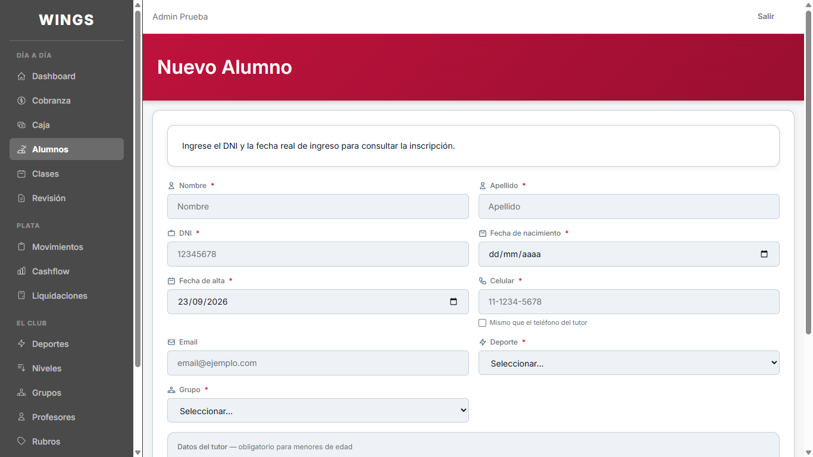
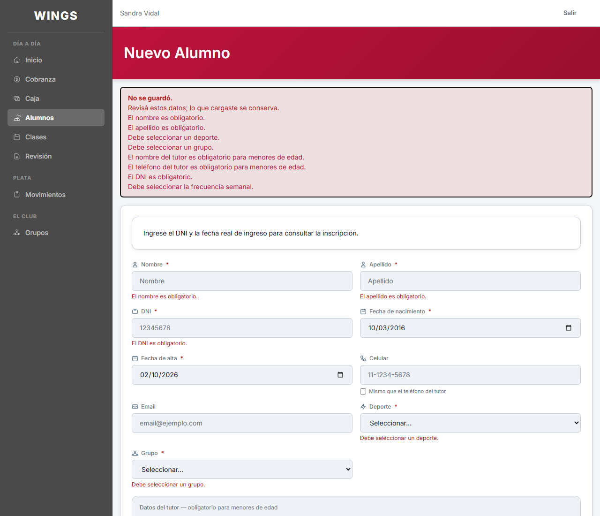
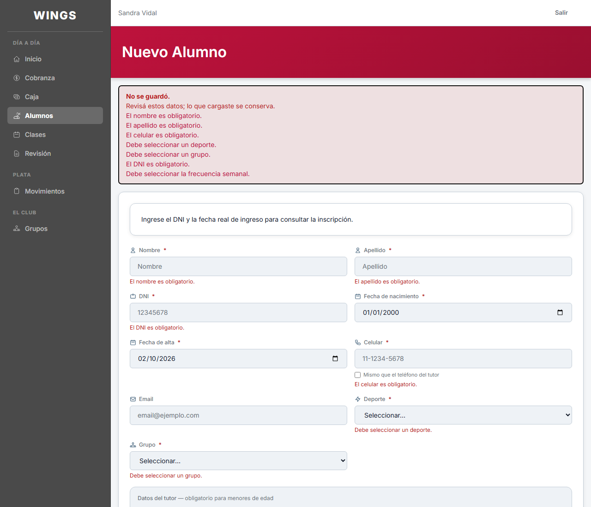
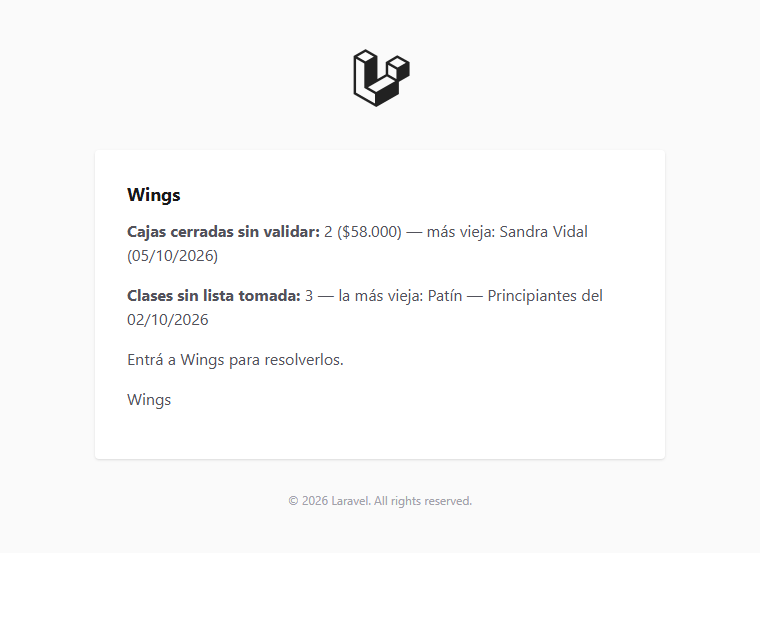
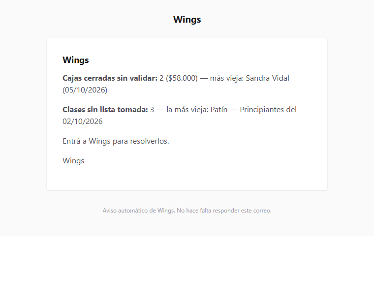

Wings · Para decidir
08/10/2026 · Lo que espera una definición tuya, solo de lo que hace Claude. Cada punto dice qué cambia, por qué, y muestra la pantalla. Tocá una imagen para verla grande.
1 · El menú — ordenado por tema y con otra cara
- Qué cambia en el orden
- Las secciones son las mismas para los dos roles y cada una tiene lo suyo. Día a día: inicio, alumnos y clases. Plata: todo lo que mueve o muestra dinero — Cobranza, Caja, Movimientos, Revisión, y para el admin también Cashflow y Liquidaciones. El club: los catálogos. El operativo ve las mismas secciones con menos renglones.
- Por qué
- Antes Cobranza y Caja estaban en «Día a día» y «Plata» era solo del admin. Al sumarle Movimientos al operativo quedaba una sección «Plata» de un renglón, con la plata repartida en dos lados. Lo marcaste vos.
- Qué cambia en el aspecto
- El logo del club al lado del nombre. Cada renglón con su ícono en una pastilla. La pantalla abierta se marca con el rojo de Wings: el ícono y una barra en el borde. Los títulos de sección llevan una línea. Al pasar el mouse el renglón se aclara.
- Por qué
- Pediste que dejara de ser feo y parco. Usé solo los colores del sistema de diseño de Wings; el rojo aparece como acento, nunca como fondo.
- A quién le cambia
- A todos: el menú está en todas las pantallas. El del profesor conserva sus renglones y toma el aspecto nuevo. En celular es el mismo menú, plegado.
- Quién lo hizo
- Claude. Está aplicado en esta máquina, sin publicar.
Te pido: OK, o decime qué cambiar — el orden, el aspecto o las dos cosas.
Operativo
Admin
Ver el menú del admin en la pantalla completa → · Ver el del operativo →
Los ANTES son capturas del relevamiento del 23/09. No capturé el menú del profesor ni el menú abierto en celular.
- Una duda que encontré: ¿hace falta Movimientos en el menú del operativo?
- El operativo ya llega a sus movimientos por otro lado: en la pantalla Caja hay un botón Historial, que lista los movimientos de su rubro de los últimos 90 días. Y hay una nota vieja del proyecto que dice que Movimientos se sacó de su menú a propósito, porque «ese acceso corresponde a Caja». El defecto A39, del relevamiento del 23/09, pide lo contrario. Son dos pantallas parecidas con dos entradas.
Ver la pantalla Movimientos como la ve la operativa →
Te pido: dejo Movimientos en el menú del operativo, o lo saco y queda solo el Historial dentro de Caja.
2 · A26 — El celular deja de ser obligatorio para menores
- Qué cambia
- Al dar de alta o editar un alumno menor de 18, el Celular se puede dejar vacío. Si queda vacío, se guarda el teléfono del tutor. El asterisco rojo del campo desaparece cuando la fecha de nacimiento es de un menor. A los mayores se les sigue exigiendo.
- Por qué
- El sistema pedía celular propio a chicos que no tienen. Para un menor el teléfono del tutor ya era obligatorio, y es al que el club llama de todos modos.
- Quién lo hizo
- Claude. Está hecho y probado, sin publicar.
Te pido: OK para publicarlo, o decime si la regla tiene que ser otra.



Las dos capturas del DESPUÉS muestran el formulario devuelto con errores, que es como se consigue ver la fecha ya cargada. Fijate en el campo Celular, a la derecha de «Fecha de alta».
3 · A44 — El correo de avisos deja de salir firmado por Laravel
- Qué cambia
- La cabecera del correo dice «Wings» y el pie dice «Aviso automático de Wings. No hace falta responder este correo.» El contenido del aviso no cambia.
- Por qué
- El resumen diario te llegaba con el logo de Laravel arriba y «© 2026 Laravel. All rights reserved.» abajo. Salía así porque usaba la plantilla de fábrica, que toma el nombre de la configuración del servidor. Ahora el nombre va escrito en la plantilla y no depende de cada servidor.
- Quién lo hizo
- Claude. Está hecho y probado, sin publicar.
Te pido: OK para publicarlo, o decime qué texto querés en la cabecera y en el pie.


Los dos correos se armaron con datos de ejemplo. No se probó en un programa de correo real.
4 · A38 — La paginación en castellano
- Qué cambia
- Al pie de las listas, «Showing 1 to 20 of 76 results» pasa a «Mostrando 1 a 20 de 76 resultados», y los botones a «Anterior» y «Siguiente». Vale para las 13 listas paginadas, no solo para Clases.
- Por qué
- El sistema estaba configurado en inglés de fábrica. Lo dejé fijo en castellano.
- Un efecto de paso
- En Cobranza, el mes abreviado de la deuda más vieja pasa a verse en castellano. Era la única fecha que dependía de ese ajuste.
Te pido: nada. No toca el diseño; va junto con los tres de arriba. Si no lo querés, decímelo.
No tengo captura de este. Lo cubre una prueba automática.
5 — Dos preguntas sin pantalla
- ¿Reviso los informes viejos de Gemini?
- Qué haría: contrastar contra el repositorio los informes con los que Gemini cerró A4, A5, A43, los permisos y la primera carga por Excel. Solo lectura, no cambia nada.
Por qué: el primer informe de Gemini sobre la caja citaba capturas y pruebas que no existían. Esos cinco los verificó antes, y no sé si con el mismo método. Si alguno no se sostiene, se reabre. - ¿Dónde dejo los datos para probar la primera carga?
- Qué haría: guardar en el repositorio los 60 alumnos de prueba del sitio de prueba, acomodados en las 38 columnas de la plantilla nueva, para cargarlos como lo haría una persona.
Por qué te lo pregunto: me dijiste que sí, pero el control de seguridad de mi sesión lo bloqueó dos veces porque son datos de personas sacados del servidor, aunque sean inventados. Para destrabarlo hace falta que apruebes ese permiso en la sesión, o lo armo desde el respaldo cuando hagamos la prueba.
Te pido: sí o no a la revisión; y cómo preferís resolver lo de los datos.